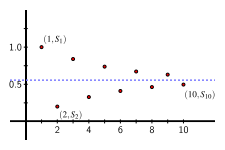

Is it possible to find the Taylor series expansion for a given function \(f\) without computing and evaluating various derivatives of \(f\text{?}\)
Can we differentiate or integrate a Taylor series similar to how we differentiate or integrate a polynomial? If so, how does doing so affect the values of \(x\) for which the Taylor series converges?
What is an alternating series and how can we determine whether or not it converges? How do the partial sums of a converging alternating series accurately estimate its exact sum?
So far, we have focused our attention on a collection of five basic functions functions — \(\frac{1}{1-x}\text{,}\)\(\ln(1+x)\text{,}\)\(\sin(x)\text{,}\)\(\cos(x)\text{,}\) and \(e^x\) — and their Taylor series centered at \(a = 0\text{.}\) One of the reasons we were able to find these Taylor series is the patterns that arise in the derivatives of each of these functions. While we can always use Definition 8.4.1 to find the first few terms of the Taylor series, for most functions it is challenging to find a pattern among the various derivatives that allows us to state the general \(n\)th term of the series.
In Preview Activity 8.5.1, we explore this issue and investigate a different approach to finding the Taylor series of a given function.
We know the coefficients of the Taylor series for \(g(x)\) centered at \(a=0\) are given by \(\frac{g^{(k)}(0)}{k!}\text{,}\) so we start calculating some derivatives. Note that we can write \(g(x)=(1+x^2)^{-1}\text{.}\) Calculate \(g'(x)\text{,}\) and \(g''(x)\text{.}\)
\(g'(x)={}\) and \(g''(x)={}\)
(b)
If you simplify \(g''(x)\text{,}\) take the derivative again, and simplify the result, you’d find that
If we don’t rewrite \(g'''(x)\) from the form shown above, what derivative rules would be needed to calculate \(g^{(4)}(x)\text{?}\) Select all that apply.
Exponential
Chain
Constant Multiple
Quotient
Product
Sum or Difference
Power
All of the above
(c)
Find \(g(0)\text{,}\)\(g'(0)\text{,}\)\(g''(0)\text{,}\) and \(g'''(0)\text{.}\)
Use the results to determine \(T_3(x)\text{.}\)
(d)
Since the derivatives of \(g\) become so complicated, we consider a different approach to finding the Taylor series centered at \(a=0\) for \(g(x)=\frac{1}{1+x^2}\text{.}\) We take advantage of the fact that \(f(x)=\frac{1}{1-x}\) has a Taylor series expansion we already know, and observe that \(f\) has an algebraic structure similar to \(g\text{.}\)
We introduce a new variable, \(u\text{,}\) and recall that
How does the answer here compare to the formula you found for \(T_3(x)\) in (c)?
(e)
Note that \(1 - \left(-x^2\right) = 1 + x^2\text{,}\) so we just found an infinite series representation for \(g(x) = \frac{1}{1 + x^2}\) without calculating derivatives of \(g(x)\text{,}\) by using the series we had already calculated for \(f(u) = \frac{1}{1 - u}\text{.}\) For what values of \(x\) do you expect this series for \(g(x)\) will converge?
Hint: Think about what you know about the values of \(u\) for which the series for \(f(u)\) will converge.
Subsection8.5.1Using substitution and algebra to find new Taylor series expressions
The substitution technique we used in Preview Activity 8.5.1 can be used to find the Taylor series for any function whose structure is similar to that of a Taylor series we already know.
Example8.5.1.
Find the Taylor series expansion for \(g(x) = x^4 \cos(x^3)\) and determine the \(x\)-values for which the series converges.
Since Equation (8.5.1) is valid for every real number \(u\text{,}\) letting \(u = x^3\) tells us that Equation (8.5.2) is valid for every real number \(x\text{.}\) The Ratio Test can be used to show that multiplying every term of a Taylor series by the same power of \(x\) does not change the set of \(x\)-values for which the series converges, so the Taylor series for \(g(x)\) also converges for every value of \(x\text{.}\)
Because the approaches in Preview Activity 8.5.1 and Example 8.5.1 each require us to use a known Taylor series, we restate the Taylor series we've established so far for \(5\) important functions in Table 8.5.2.
Important Taylor series representations.
Table8.5.2.Taylor series and the \(x\)-values where they converge for \(5\) important functions.
In Activity 8.5.2, we find several Taylor series using substitution and algebraic techniques.
Activity8.5.2.
Use known Taylor series and substitution and algebraic techniques to find a Taylor series representation for each of the following functions. In addition, state the interval of \(x\)-values for which you expect each Taylor series to converge.
\(\displaystyle g(x) = x^3 \sin(x^2)\)
\(\displaystyle h(x) = e^{-x^4}\)
\(\displaystyle p(x) = \frac{1}{1+5x}\)
\(\displaystyle q(x) = x^2\ln(1+x^4)\)
\(\displaystyle r(x) = \frac{e^{3x}-1}{3x}\)
Subsection8.5.2Differentiating and integrating Taylor series
In Chapter 5, we discussed the challenge posed by definite integrals such as
Because we are unable to find a simple algebraic antiderivative for the function \(\sin(x^2)\text{,}\) we cannot use the First Fundamental Theorem of Calculus to evaluate the integral exactly. We learned in Section 5.2 that the Second Fundamental Theorem of Calculus provides us with an antiderivative of a given function by using an integral function: one antiderivative of \(f(x) = \sin(x^2)\) is
Our recent work with Taylor series now suggests another way to find an antiderivative \(F(x)\) for \(f(x) = \sin(x^2)\text{,}\) and this approach also provides new options for finding additional Taylor series. In Activity 8.5.2, as part of our work in finding a Taylor series for \(x^3 \sin(x^2)\) we found that
and that this representation of \(\sin(x^2)\) is valid for every value of \(x\text{.}\) This infinite series representation suggests that we could find an antiderivative \(F(x)\) of \(\sin(x^2)\) by using Equation (8.5.3) to actually evaluate the integral \(\int_0^x \sin(u^2) \, du\text{.}\) Doing so, we see
is an antiderivative of \(f(x) = \sin(x^2)\text{.}\)
While it is natural to wonder how integrating a Taylor series might change the values of \(x\) for which the series converges, it turns out that integrating a Taylor series has almost no effect 1 on where the series converges (nor does differentiating such a series). This fact is stated formally in a result called The Power Series Differentiation and Integration Theorem. (A power series is any series of the form \(f(x) = \sum_{k=0}^{\infty} c_k (x-a)^k\text{;}\) every Taylor series is a power series, and a famous result called Borel's Theorem tells us that every power series is in fact that Taylor series of a related function.)
The Power Series Differentiation and Integration Theorem.
If \(f(x) = \sum_{k=0}^{\infty} c_k (x-a)^k\) converges for \(|x-a| \lt R\) for a positive real number \(R\text{,}\) then
\begin{equation*}
f'(x) = \sum_{k=1}^{\infty} k \cdot c_k (x-a)^{k-1}
\end{equation*}
and both of these series converge if \(|x-a| \lt R\text{.}\)
Stated more informally, the Power Series Differentiation and Integration Theorem tells us that when it comes to differentiating or integrating a Taylor series, we can do so just as if they were finite polynomials: we can differentiate or integrate the Taylor series term-wise following the Power Rule for differentiating or integrating \(x^n\text{.}\) Moreover, doing so doesn't change the interval on which the Taylor series converges 2 . Since polynomials are the easiest of all functions to differentiate and integrate, we can now find many more Taylor series of interesting functions.
Activity8.5.3.
In this activity we will determine the Taylor series expansion for \(\arctan(x)\text{,}\) plus we'll explore a different way to find the Taylor series for \(\ln(1+x)\text{.}\)
We begin with the function \(g(x) = \arctan(x)\text{.}\)
Use this relationship to find a power series expansion for \(g(x)\text{.}\)
For what interval of \(x\)-values is the Taylor series for \(g(x) = \arctan(x)\) guaranteed to converge?
In Section 8.4, we used Definition 8.4.1 to find the Taylor series expansion for \(h(x) = \ln(1+x)\text{.}\) Here we use substitution and integration to develop the Taylor series of \(h(x)\) in a different way.
State the Taylor series expansion for \(p(u) = \frac{1}{1-u}\text{.}\)
Let \(u = -x\) and use the series in (i) to find the Taylor series expansion for \(r(x) = \frac{1}{1+x}\text{.}\)
Use the Taylor series for \(e^{x}\) to find the Taylor series for \(e^{-t^2}\text{.}\)
Next, evaluate the integral \(\int_0^x e^{-t^2} \, dt\) by replacing \(e^{-t^2}\) with its Taylor series.
Use your work in (b) to state the Taylor series for \(\erf(x) = \frac{2}{\sqrt{\pi}} \int_0^x e^{-t^2} \, dt\)
For what interval of \(x\)-values will the Taylor series for \(\erf(x)\) converge? Why?
In probability theory, \(\erf(x)\) is important because of its connection to the normal distribution, which is represented by a bell curve. Indeed, \(\erf(x)\) represents the fraction of a normally distributed characteristic in a population that lies between \(0\) and \(x\text{.}\) How can you use your result in (c) to estimate \(\erf(2)\text{?}\)
Near the end of Section 8.4, we noted the important big-picture perspective that for familiar basic functions that are infinitely differentiable, such as \(f(x) = \sin(x)\text{,}\) not only can we find the function's Taylor series and determine the \(x\)-values for which the Taylor series converges, but the Taylor series converges to the function itself. Furthermore, we noted that these representations play a key role in how computers provide decimal approxations to quantities such as \(\sin(1)\text{,}\) which can be represented as
Our most recent work with Taylor series shows that the news is better still: now we can easily represent even more complicated functions with Taylor series, such as \(f(x) = e^{-x^2}\) and \(g(x) = \sin(x^2)\text{,}\) and determine their antiderivatives using their infinite Taylor series and treating that representation just like a polynomial. In the last portion of this section, we investigate further how certain infinite series of numbers can be easily and accurately approximated using partial sums that result from evaluating Taylor series.
The infinite series in Equation (8.5.4) is an example of an alternating series of real numbers. It turns out to be straightforward to determine whether or not an alternating series converges, and also to estimate the value of a convergent alternating series.
We will only consider alternating series for which the sequence of positive numbers \(a_k\) decreases to \(0\text{.}\) The following example illustrates two general results that hold for any alternating series whose terms \(a_k\) decrease to \(0\text{.}\) We use a geometric series so that we can know its exact sum and compare certain computations to that sum.
Example8.5.4.
Investigate the partial sums of the alternating geometric series \(S = \sum_{k=0}^{\infty} (-1)^k \left( \frac{4}{5} \right)^k\text{.}\) How do the partial sums compare to the exact sum of the series, and how can partial sums accurately estimate the value of the sum?
We compute the first \(10\) partial sums of the series and display the results in Table 8.5.5 and plot the points \((n, S_n)\) in Figure 8.5.6.
Table8.5.5.Partial sums of the alternating series
\(n\)
\(S_n\)
\(1\)
\(1\)
\(2\)
\(\frac{2}{5} = 0.2\)
\(3\)
\(\frac{21}{25} = 0.84\)
\(4\)
\(\frac{41}{125} = 0.328\)
\(5\)
\(\frac{461}{625} = 0.7376\)
\(6\)
\(\frac{1281}{3125} = 0.40992\)
\(7\)
\(\frac{10501}{15625} = 0.672064\)
\(8\)
\(\frac{36121}{78125} = 0.4623488\)
\(9\)
\(\frac{246141}{390625} = 0.63012096\)
\(10\)
\(\frac{968561}{1953125} = 0.495903232\)
Figure8.5.6.Partial sums of the alternating series and the horizontal line \(y = \frac{5}{9}\text{.}\)
Because the given series \(S = \sum_{k=0}^{\infty} (-1)^k \left( \frac{4}{5} \right)^k\) is geometric with \(a = 1\) and \(r = -\frac{4}{5}\text{,}\) we know the series converges and its sum is
Knowing this value helps us better understand the behavior of the partial sums.
In both the table and the figure, we see how consecutive partial sums move back and forth above and below the exact sum of the infinite series, \(\frac{5}{9}\text{,}\) and moreover how the amount the next partial sum lies above or below \(\frac{5}{9}\) is less than the amount by which the previous partial sum deviated. For instance,
Moreover, since \(S_6 = S_5 - \left( \frac{4}{5} \right)^5\text{,}\) and \(-\left( \frac{4}{5} \right)^5 = -0.32768\) is the last and smallest term (in absolute value) in \(S_6\text{,}\)\(0.32768\) is the total vertical distance from the point \((5, S_5)\) to \((6, S_6)\) in Figure 8.5.6. This implies that \(0.32768\) is more than the error in comparing \(S_5\) and \(S\text{.}\) Said differently, we are guaranteed that
if the positive terms \(a_k\) decrease to 0 as \(k \to \infty\text{,}\) then the alternating series converges.
If we were to compute the partial sums \(S_n\) of any alternating series whose terms decrease to zero and plot the points \((n,S_n)\) as we did in Figure 8.5.6, we would see a similar picture: the partial sums alternate above and below the value to which the infinite alternating series converges. In addition, because the terms go to zero, the amount a given partial sum deviates from the total sum is at most the next term in the series. This result is formally stated as the Alternating Series Estimation Theorem.
Alternating Series Estimation Theorem.
If the alternating series \(\sum_{k=1}^{\infty} (-1)^{k+1}a_k\) has positive terms \(a_k\) that decrease to zero as \(k \to \infty\text{,}\) and \(S_n = \sum_{k=1}^{n} (-1)^{k+1}a_k\) is the \(n\)th partial sum of the alternating series, then
Again, this result simply says: if we use a partial sum to estimate the exact sum of an alternating series, the absolute error of the approximation is less than the next term in the series.
Example8.5.7.
Determine how well the \(100\)th partial sum \(S_{100}\) of
so the 100th partial sum is within 0.0099 of the exact value of the series. In addition, it turns out that \(S_{100} \approx 0.688172\) and \(S = \ln(2) \approx 0.69314\text{,}\) so we see that the difference between \(S_{100}\) and \(S\) is indeed less than the error bound of \(0.0099\) from the Alternating Series Estimation Theorem.
Activity8.5.5.
In this activity we encounter several different alternating series and approximate the value of each using the Alternating Series Estimation Theorem.
Use the fact that \(\sin(x) = x - \frac{1}{3!}x^3 + \frac{1}{5!}x^5 - \cdots\) to estimate \(\sin(1)\) to within \(0.0001\text{.}\) Do so without entering “\(\sin(1)\)” on a computational device. After you find your estimate, enter “\(\sin(1)\)” on a computational device and compare the results.
Recall our recent work with \(\int_0^1 e^{-x^2} \, dx\) in Equation (8.5.4), which states
Use this series representation to estimate \(\int_0^1 e^{-x^2} \, dx\) to within \(0.0001\text{.}\) Then, compare what a computational device reports when you use it to estimate the definite integral.
Find the Taylor series for \(\cos(x^2)\) and then use the Taylor series and to estimate the value of \(\int_0^1 \cos(x^2) \, dx\) to within \(0.0001\text{.}\) Compare your result to what a computational device reports when you use it to estimate the definite integral.
What happens if \(x = 1\text{?}\) Explain why the series \(1 - \frac{1}{2} \cdot 1^2 + \frac{1}{3} \cdot 1^3 - \cdots + (-1)^{n-1} \frac{1}{n} \cdot 1^n + \cdots\) must converge and estimate its sum to within \(0.01\text{.}\) What is the exact sum of this series?
Subsection8.5.4Summary
Through substitution, we can use any known Taylor series to find the Taylor series of a related function. For example, we know that if \(|u| \lt 1\text{,}\)
and that this representation converges if \(|4x^2| \lt 1\text{,}\) so for \(x\) such that \(|x| \lt \frac{1}{2}\text{.}\)
The Power Series Differentation and Integration Theorem tells us that we can differentiate or integrate a Taylor series in the natural way and that doing so has essentially no impact on the set of \(x\)-values for which the series converges. For instance, we might note that if we first found the Taylor series for \(\sin(x)\text{,}\) which is
which is precisely the Taylor series for \(\cos(x)\) that we found by taking derivatives and applying Definition 8.4.1.
An alternating series is one whose terms alternate in sign, usually represented by \(\sum_{k=1}^{\infty} (-1)^{k+1}a_k\) where \(a_k \gt 0\) for all values of \(k\text{.}\) Any alternating series whose terms \(a_k\) approach zero as \(k \to \infty\) is guaranteed to converge. Moreover, the Alternating Series Estimation Theorem tells us that we can estimate the exact value of a converging alternating series by using a partial sum, and the error of that approximation is at most the next term in the series. That is,
If \(y = \sum_{k=0}^\infty \left(k+1\right)x^{k+3}\) then \(y^\prime = \sum_{k=0}^\infty\)
2.
(a)Part 1.
Note that when the constant in the denominator is not 1, we still can use the geometric series, but we have to multiply by a form of 1 that helps us. We'll use \(\frac{\frac{1}{5}}{\frac{1}{5}}\text{.}\)
For the following indefinite integral, find the full power series centered at \(t=0\) and then give the first 5 nonzero terms of the power series and the open interval of convergence.
\(f(t) = C + \displaystyle\sum\limits_{n=0}^{\infty}\)
\(f(t) = C +\)\(+\)\(+\)\(+\)\(+\)\(+ \cdots\)
The open interval of convergence is: (Give your answer in interval notation 3 .)
4.
For the following indefinite integral, find the full power series centered at \(x=0\) and then give the first 5 nonzero terms of the power series and the open interval of convergence.
how many terms do you have to compute in order for your approximation (your partial sum) to be within 0.0000001 from the convergent value of that series?
The Fresnel integral functions are important in optics and are used in the design of Fresnel lenses such as those found in lighthouses along the Lake Michigan shore.
Use the Taylor series for \(\cos(x)\) to find the Taylor series for \(\cos(t^2)\) and hence write \(C(x)\) as a Taylor series.
For what interval of \(x\)-values will the Taylor series for \(C(x)\) converge? Why?
Apply your result from (a) to estimate \(C(0.5)\) to within \(0.001\text{.}\)
Similarly, use the Taylor series for \(\sin(x)\) to find the Taylor series for \(\sin(t^2)\) and hence write \(S(x)\) as a Taylor series.
For what interval of \(x\)-values will the Taylor series for \(S(x)\) converge? Why?
Apply your result from (d) to estimate \(S(0.8)\) to within \(0.001\text{.}\)
8.
The fact that we can differentiate or integrate a Taylor series reveals other important ways we can think about functions such as \(e^x\text{.}\)
Perhaps the most important property of the function \(h(x) = e^x\) is that \(h'(x) = e^x\text{;}\) that is, the function \(e^x\) is its own derivative. Suppose that we didn't yet know the coefficients of the Taylor series expansion for \(e^x\text{,}\) so we just said
Let \(x = 0\) in Equation (8.5.5); what does this tell us about the value of \(a_0\text{?}\)
Take the derivative of both sides of Equation (8.5.5) and call your resulting equation for \(e^x\) “Equation 2”. Why do Equation (8.5.5) and Equation 2 together tell us that \(a_1 = a_0\text{?}\) Combine this observation with your conclusion in (b) and note that you now know the numerical value of both \(a_0\) and \(a_1\text{.}\)
Why do Equation (8.5.5) and Equation 2 together tell us that \(a_2 = \frac{1}{2}a_1\text{?}\)
Continue reasoning similarly to find the value of \(a_3\text{,}\)\(a_4\text{,}\) and \(a_5\text{.}\) What do you observe?
9.
In this exercise we consider the definite integral
Observe that your result in (a) is an alternating series. Estimate the value of that alternating series to within 0.0001. How many terms of the series are needed to do so?
Recall that \(\frac{d}{dx}[\arctan(x)] = \frac{1}{1+x^2}\text{.}\) Use this fact and the First Fundamental Theorem of Calculus to evaluate
Find the Taylor series representations for \(f(x) = e^x - 1 - x\) and \(g(x) = \cos(2x)-1\) and use them to evaluate the given limit. How does your result compare to using L'Hôpital's Rule?
You have attempted of activities on this page.
It is possible for the convergence status at the endpoints of the interval to change, but we are normally not concerned with those specific \(x\)-values.
Differentiating or integrating can change the convergence status at the endpoints of the interval, but we again will not concern ourselves with that issue in this course.